Исследовательское сравнение · GC midpoint · B уже исследован ранее · торговая готовность не заявляется
106 дней · 173,724 исходных запросов · 1,492,419 событий · 486,772,463 публикаций BBO.
data/derived/bb_crossing_bank_v1/first_session, включая crossings позже 30 минут. Её marks не подставляются в frozen 30m модель/счёт.SMA20 ± 2σ, исходный ddof=1; developing содержит 19 завершённых native closes и текущий BBO midpoint. Шкала M9 означает 20 девятиминутных свечей, а не окно девять минут. Бары выровнены по UTC и доступному clock котировок. cTrader API подтверждает SMA20/2; точный знаменатель встроенной дисперсии и совпадение с брокерским графиком не подтверждены. Контроль ddof=0 сохранён в data_receipt.json.
На общей поддержке старого T/L target (24/12 ticks, 300s) и нового BB target (первое событие до 1800s) класс следующей линии меняется заметно реже. Это разные вопросы; редкая смена метки не доказывает больше предсказательной информации в X. Банк сырых пересечений содержит много дребезга: десятки быстрых переходов через одну линию могут оставлять название следующей линии прежним.
| Масштаб | Общих пар / 30s | Смена старого TAKE/STOP/TIME | Смена BB класса | Смена event / NONE-block ID | Повтор той же линии <1s |
|---|---|---|---|---|---|
| M1 | 64,694 | 22.92% | 5.26% | 30.86% | 67.9% |
| M3 | 63,205 | 23.11% | 2.18% | 18.10% | 68.4% |
| M6 | 61,195 | 23.30% | 1.42% | 13.39% | 68.7% |
| M9 | 59,510 | 23.46% | 1.23% | 11.31% | 69.2% |
| Голова | Ближайшая линия | Geometry | Rich | Rich + вес события | Event accuracy: rich / weighted | Уникальных событий B | Смена target /30s |
|---|---|---|---|---|---|---|---|
| M1 | 69.9% | 76.4% | 76.4% | 75.6% | 87.5% / 88.8% | 20,572 | 5.2% |
| M3 | 67.1% | 71.1% | 71.0% | 70.6% | 90.5% / 91.3% | 11,561 | 2.2% |
| M6 | 63.7% | 68.8% | 68.2% | 68.1% | 90.2% / 91.4% | 8,043 | 1.4% |
| M9 | 61.2% | 66.5% | 66.2% | 67.3% | 89.9% / 90.8% | 6,447 | 1.2% |
| GLOBAL | 64.9% | 66.4% | 66.4% | 67.2% | 73.2% / 75.4% | 32,216 | 21.5% |
Event score сначала усредняет ошибки вопросов одного события, затем даёт событиям равный вес. NONE без события объединены по фиксированным 1800-секундным блокам origins; это отдельные группы, не вымышленные crossings. Здесь нет правила «хотя бы один удачный прогноз означает успех всего события». В X нет будущих ID, времени пересечения, equity или target. Rich использует 65 прежних скаляров потока/дня/STFT и 16 полей BB; полная последовательность текущего и вчерашнего дня в модель не подаётся.
В этом сравнении вход T — первый поддержанный BBO строго после 100 ms, timeout 2 s. BUY по ask, SELL по bid, комиссия $0.30 за оборот одной условной унции. Пассивный P здесь повторно не исследован. Четыре checkpoint принадлежат одному гипотетическому входу; их нельзя суммировать. Счёт выбирает один масштаб заранее и выходит после первого пересечения с ещё 100 ms задержки, либо по 30 минутам/концу сессии. Фиксированного защитного stop в этой ветви нет.
| Счёт | A2 admission | B завершённых сделок | B известный префикс, $ | Причина остановки / цензура |
|---|---|---|---|---|
| M1 | False | 540 | -351.40 | 2026-01-29 / потеря поддержки геометрии |
| M3 | False | 341 | -271.40 | 2026-01-21 / тайм-аут выхода 3.244s |
| M6 | False | 138 | -119.20 | 2026-01-07 / тайм-аут выхода 3.004s |
| M9 | False | 170 | -138.80 | 2026-01-07 / тайм-аут выхода 6.314s |
При admission=false рабочее действие остаётся WAIT. Кандидатные префиксы приведены для диагностики. Отсутствие дополнительного cooldown не снимает ограничения одного открытого положения. Общий event ID исправляет повторный учёт будущего события, но не гарантирует независимость соседних событий или устойчивость модели.
Пять из шести остановок A2/B связаны с отсутствием новой публикации для выхода в пределах 2 секунд после запроса, хотя поддержка котировок сохранялась. Это ограничение объявленного рецепта исполнения; оно не доказывает потерю стакана. Один B счёт остановлен при потере поддержки геометрии. Первые доступные цены позже тайм-аута не подставлены задним числом. Причины сохранены в execution_censor_diagnostics.json.
Доли положительных marks по фактическому delay — условное описание будущего, не доступное при входе правило ожидания. Количество перекрывающихся запросов в показанных delay bins:
| Будущий delay | M1 | M3 | M6 | M9 |
|---|---|---|---|---|
| 0–10 s | 28,669 | 16,416 | 11,584 | 9,513 |
| 10–30 s | 23,086 | 13,613 | 9,453 | 7,487 |
| 30–60 s | 22,076 | 13,530 | 9,661 | 7,675 |
| 60–120 s | 26,817 | 18,687 | 13,543 | 11,012 |
| 120–300 s | 37,530 | 32,435 | 25,688 | 21,308 |
| 300–600 s | 22,608 | 28,224 | 24,946 | 21,707 |
| 600–1800 s | 8,798 | 36,486 | 40,906 | 39,347 |
На гистограмме задержки исполнения за пределами ±$2 остаются 0.52%–0.90% наблюдений для M1–M9. Все хвостовые квантили сохранены в profile_summary.json.
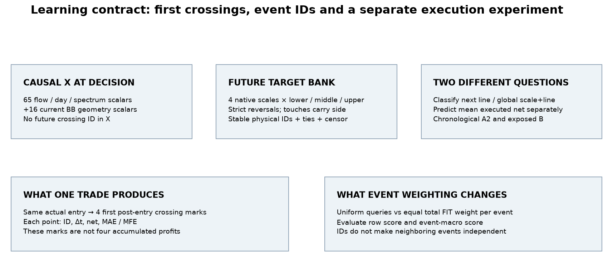
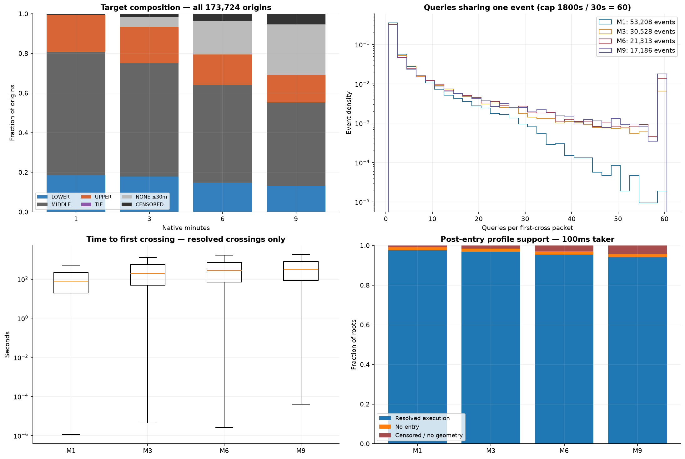
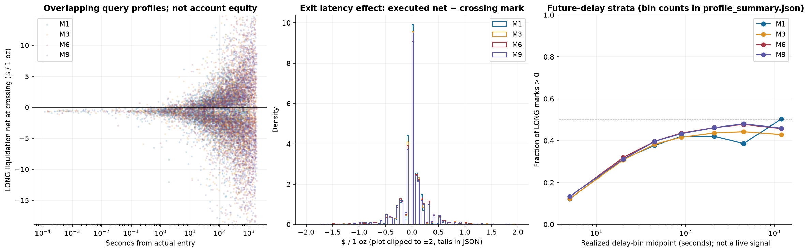
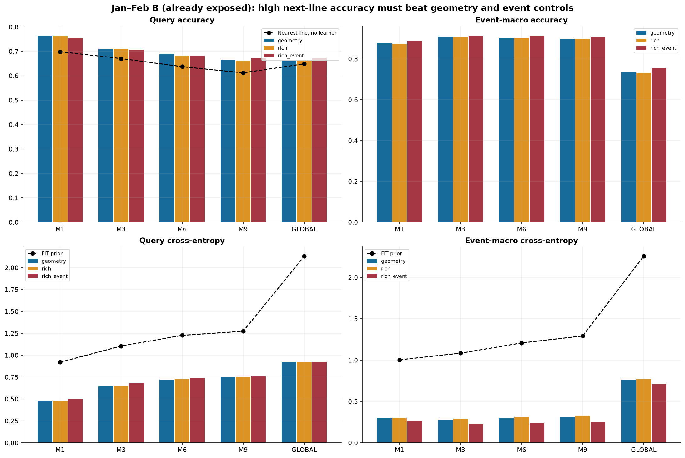
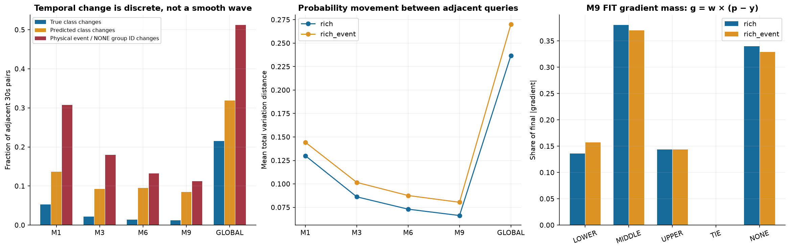
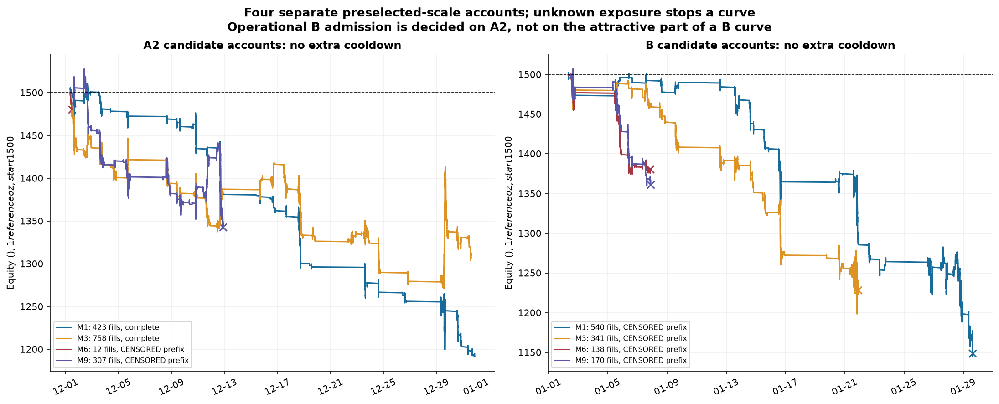
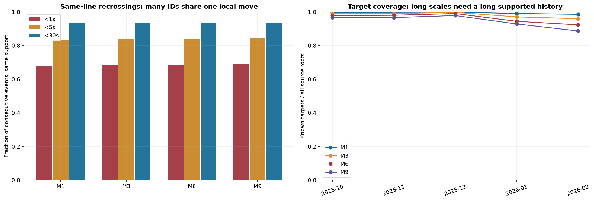
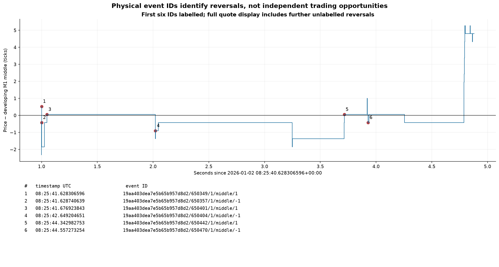
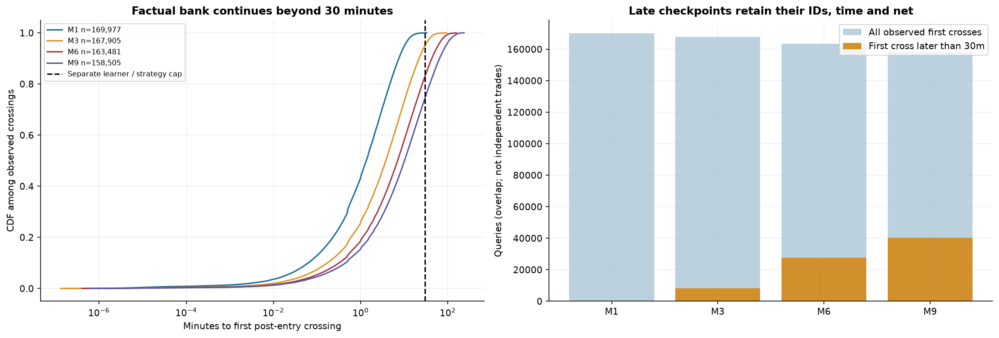
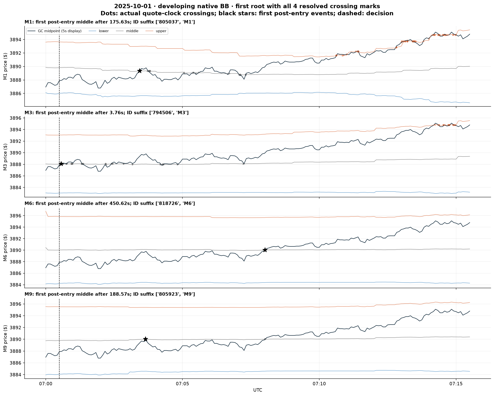
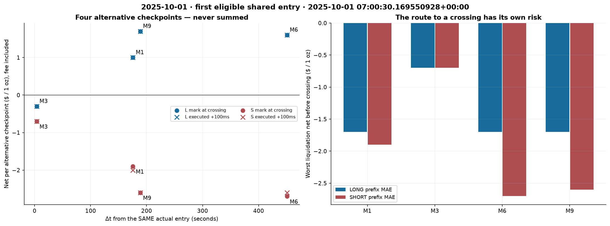
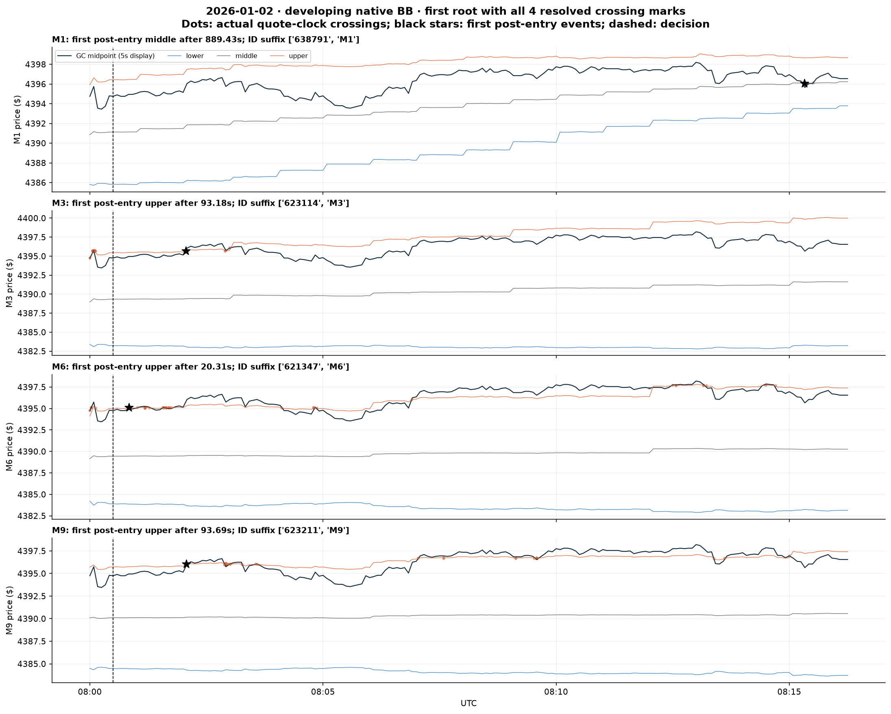
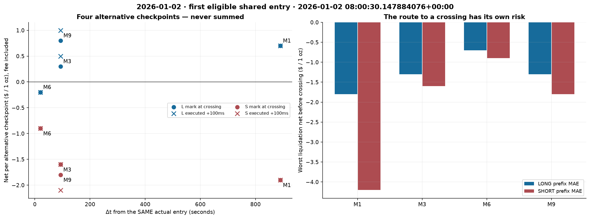
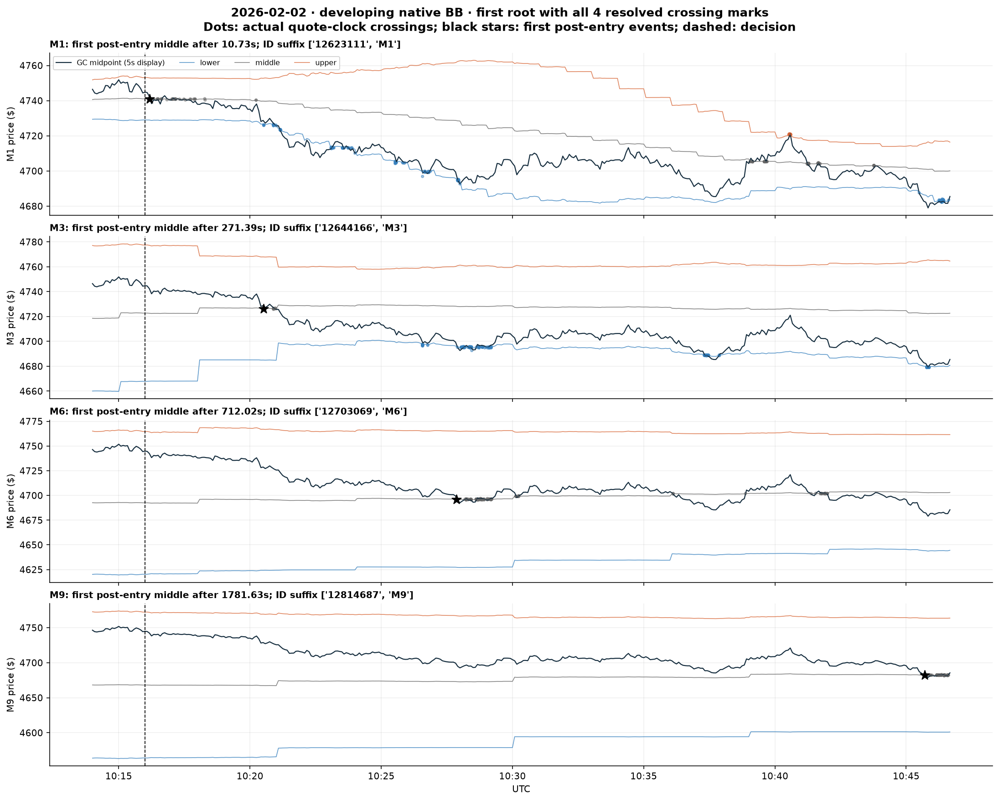
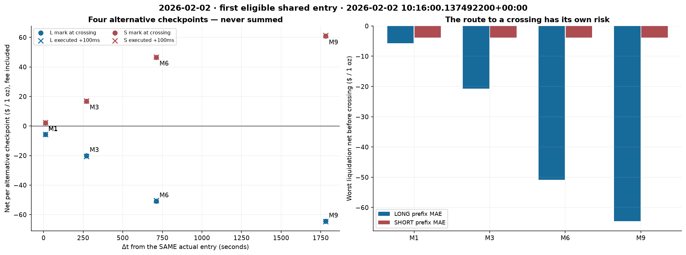
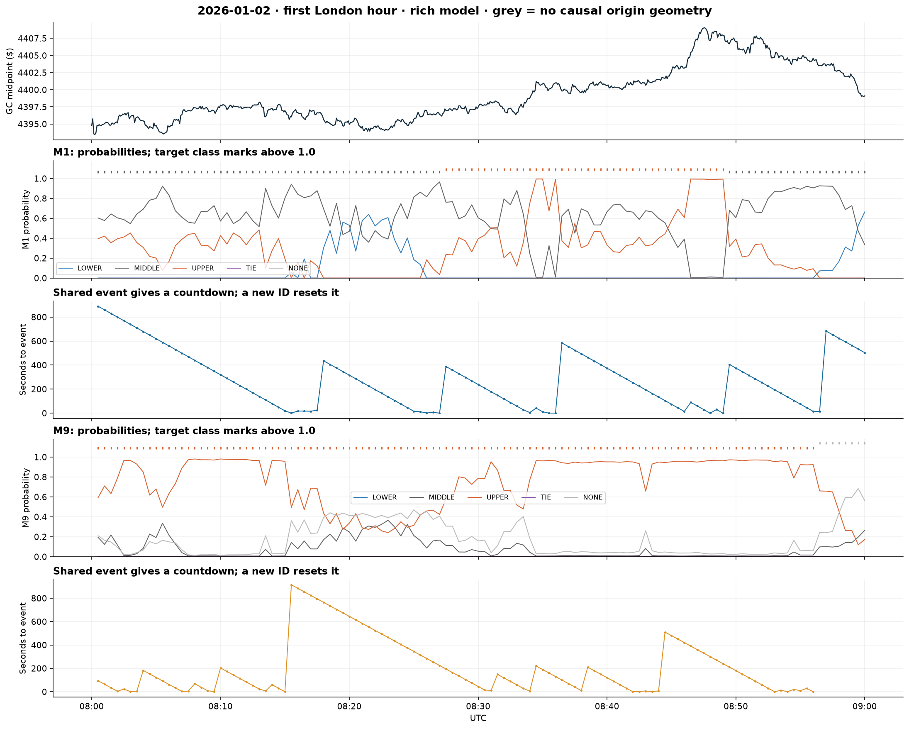
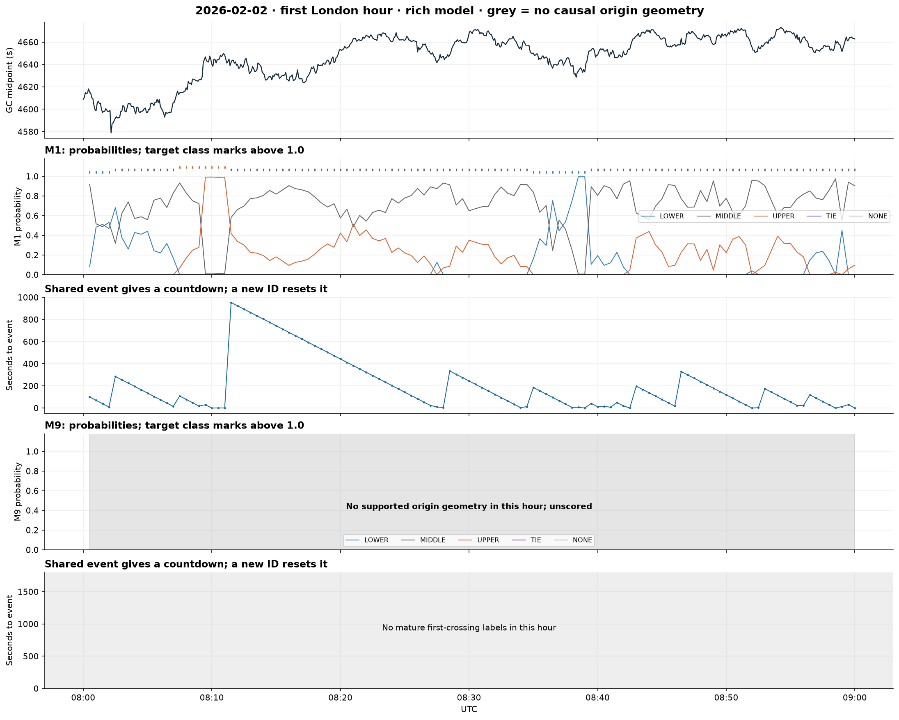
Результаты моделей и градиентов · Покрытие и ddof · Полная проекция первых crossings · Независимая проверка котировок · Replay счетов · Проверка моделей и хешей · Доступ к признакам и контексту · IDs сцен и точные часы · Визуальный аудит Sol 6.1